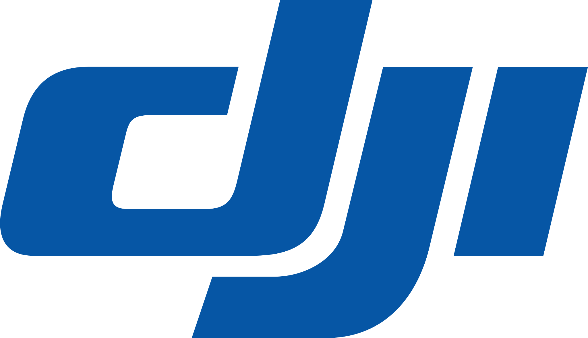

Trusted by experts.
Used by the leaders.

 SIGMA
SIGMA

 UniFi
TrueNAS
UniFi
TrueNAS
Aracle ist mehr als nur eine Community. Ein offenes Netzwerk, in dem Firmen, Creator und Freelancer gemeinsam echte Projekte erschaffen.
Trusted by experts.
Used by the leaders.

SIGMA
UniFi
TrueNAS
Firmen, Creator und Freelancer bringen Projekte, Ideen und Talent zusammen und bauen daraus etwas Echtes. Von der Community, für die Community.
Projekte herantragen: Web, Branding, Video, Server.
Zentral verteilt an die passenden Köpfe im Netzwerk.
Technik, Gaming und Design vereint zu etwas Sichtbarem.
Gründer von Aracle. Angefangen hat alles 2017 mit einer simplen Idee: Leute, die etwas können, zusammenbringen, statt allein vor sich hin zu werkeln. Heute steckt in Aracle alles, was mich antreibt.
Lieber echt als perfekt. Lieber gemeinsam als allein.
Bring dein Projekt ein, werde Teil des Netzwerks oder mach einfach mit.
Jetzt mitmachen →